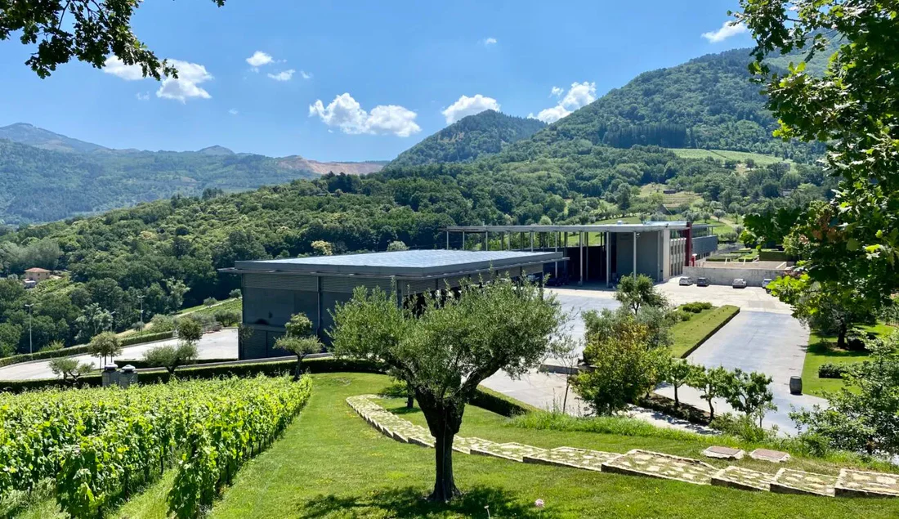
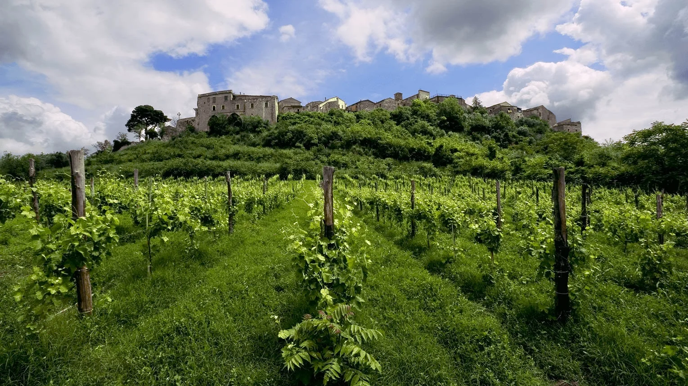
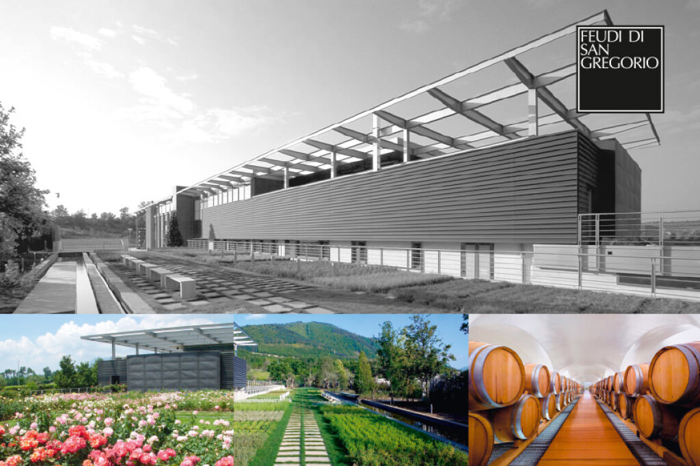
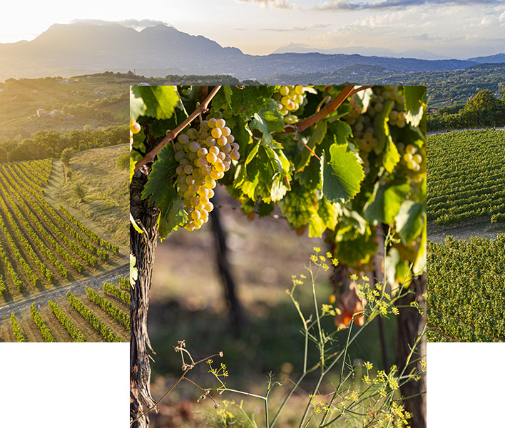
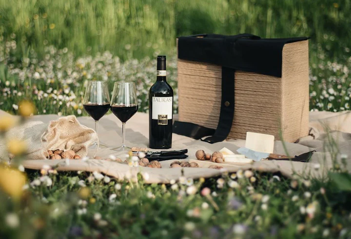
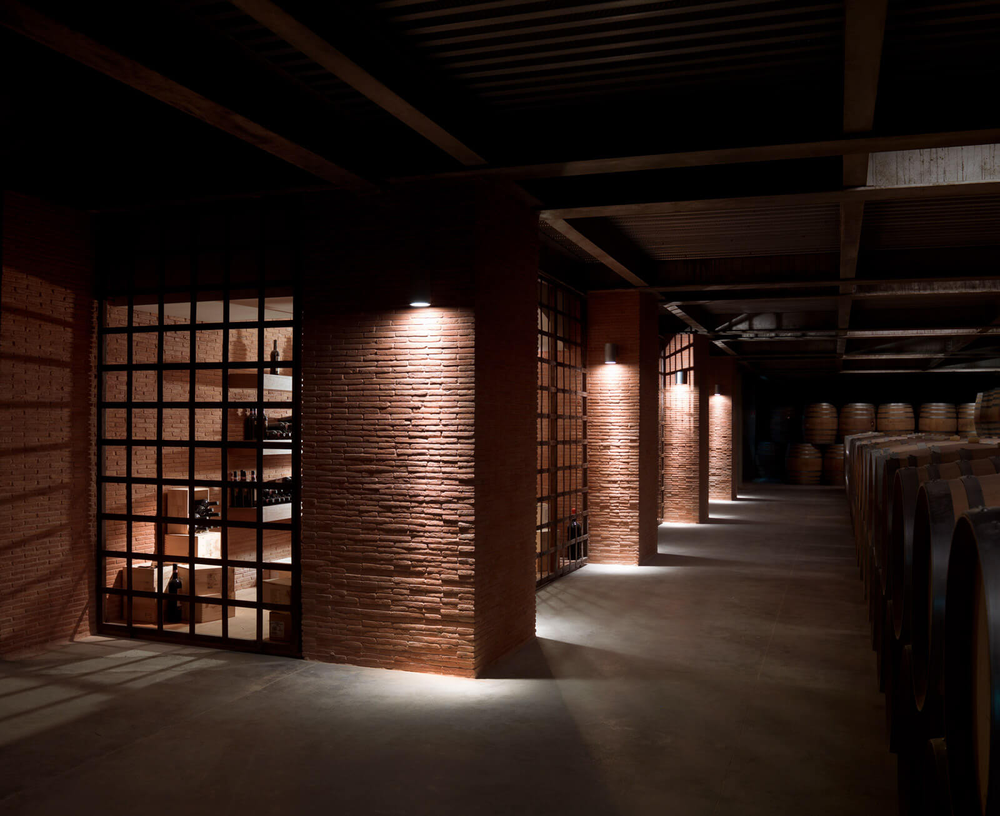
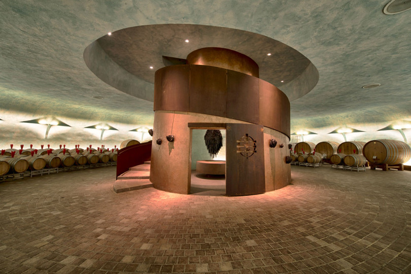
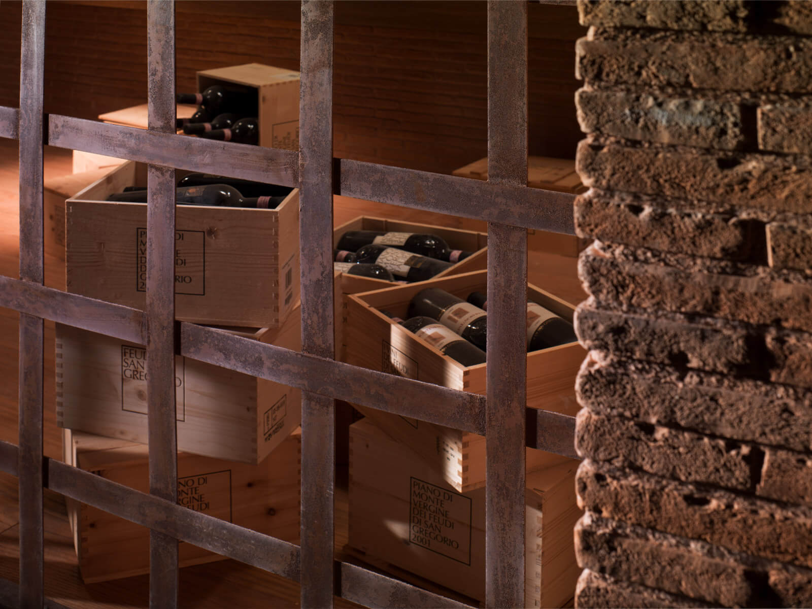

Ambiente
Attenzione alla biodiversità, al territorio, alla qualità della coltivazione e all’impatto delle attività produttive.
Feudi di San Gregorio nasce nel 1986 a Sorbo Serpico, in provincia di Avellino(AV), e rappresenta una delle realtà più note del panorama vitivinicolo del Sud Italia. L’azienda ha costruito la propria identità valorizzando vitigni autoctoni campani come Greco, Fiano e Aglianico.
Il suo percorso si sviluppa in stretto legame con l’Irpinia, territorio interno della Campania caratterizzato da una forte vocazione agricola, da suoli ricchi di minerali e da un microclima particolarmente favorevole alla viticoltura.

La sostenibilità è comunicata dall’azienda attraverso report e documenti ufficiali che descrivono obiettivi, attività e risultati in ambito ambientale, sociale ed economico.
Attenzione alla biodiversità, al territorio, alla qualità della coltivazione e all’impatto delle attività produttive.
Valorizzazione del lavoro, del patrimonio locale e del rapporto con gli stakeholder del territorio irpino.
Pubblicazione di bilanci di sostenibilità e relazioni di impatto per rendere accessibili dati, obiettivi e azioni intraprese.

L’Irpinia rappresenta un territorio storico dell’Appennino campano, dove vigneti, ulivi, boschi e colture convivono da sempre. Questo legame con il paesaggio è parte integrante dell’identità di Feudi di San Gregorio.
Comunicare la sostenibilità, in questo contesto, significa anche raccontare il valore del territorio, delle tradizioni agricole e della qualità ambientale che rendono unica la nostra produzione.





